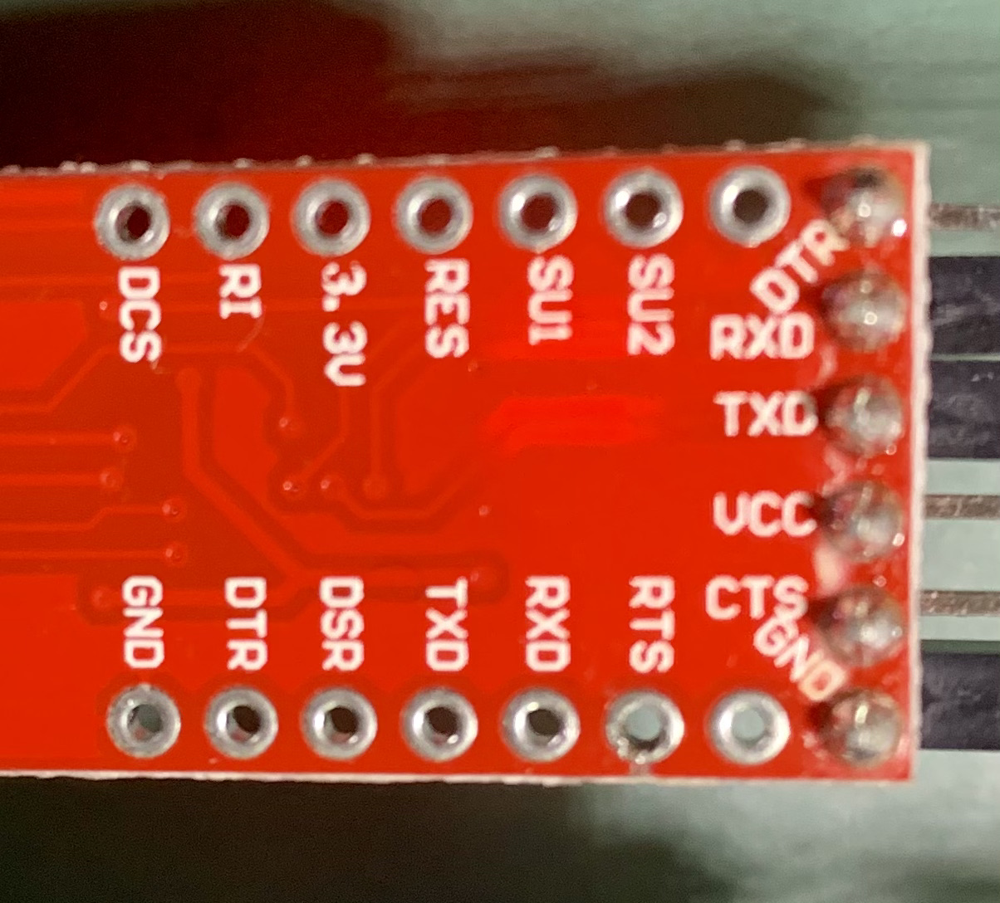

实验2指南¶
本实验指南尚未发布，内容随时可能发生变化
请跟随实验指南完成实验，完成文档中所有的TASK。BONUS部分的内容完成可作为加分，但报告的总分不应超过100分。请下载此指南作为实验报告模版，将填充完成的实验报告导出为PDF格式，并命名为“学号_姓名_lab2.pdf”，上传至学在浙大平台。下载请点击 这里 。
1 串口¶
1.1 驱动¶
由于现在的电脑已经不再标配串口，我们需要使用USB转串口的方式来进行串口通信。在本实验中，我们使用的是CP2102，其驱动程序可以在 Silicon Labs官网 上选择适合自己操作系统的版本进行下载。
在驱动安装完成后，将CP2102插到电脑的USB口，我们可以在设备管理器中看到相应设备，如下图所示：

记住这里的COM编号，就是上图中的COM7，我们将在后面的实验中使用。
对于Linux或者MacOS，我们可以使用ls /dev/tty*命令来查看串口设备，如下图所示：

上图中的/dev/tty.usbserial-0001就是我们需要的串口设备。
TASK1 请在此处放置你所查找到的USB转串口设备的截图（5分）
由于这之后的实验大多需要同时连接ST-Link和CP2102，因此建议准备一个小的USB Hub用来同时连接这两个设备，以避免插拔USB线带来的不便。
1.2 串口调试助手¶
在实验中，我们需要使用串口调试助手来进行串口通信，实现和单片机的信息交互。下面将提供三种常用的串口调试助手，供大家选择。
1.2.1 PuTTY¶
适用平台：Windows
PuTTY是一款开源的串口调试助手，其下载地址为 PuTTY官网 。选择对应架构的Windows Installer进行下载。
进行串口通信的配置如下图所示，选择Serial，根据硬件管理器里的COM编号在Serial Line输入COM7，在Speed输入115200，然后Open就可以了：

1.2.2 PicoCom¶
适用平台：Linux，MacOS
PicoCom是一款开源的串口调试助手，其Release地址为 PicoCom 。可以下载源码自行编译安装，也可以通过相应平台的包管理器进行安装，如Ubuntu可以使用sudo apt install picocom进行安装，MacOS可以使用brew install picocom进行安装。
这是一个典型的Linux开源软件。启动picocom时，用以下的命令行参数：
picocom -b 115200 /dev/tty.usbserial-0001
其中115200是波特率，/dev/tty.usbserial-0001是串口设备。
picocom启动时会显示所有的配置参数：
picocom v3.2a
port is : /dev/tty.usbserial-0001
flowcontrol : none
baudrate is : 115200
parity is : none
databits are : 8
stopbits are : 1
escape is : C-a
local echo is : no
noinit is : no
noreset is : no
hangup is : no
nolock is : no
send_cmd is : sz -vv
receive_cmd is : rz -vv -E
imap is :
omap is :
emap is : crcrlf,delbs,
logfile is : none
initstring : none
exit_after is : not set
exit is : no
Type [C-a] [C-h] to see available commands
Terminal ready
以上所有的参数都可以通过命令行参数来设置。暂时我们不需要做任何的特殊配置。
退出picocom时，按下Ctrl+A，然后按下Ctrl+X即可。
1.2.3 CoolTerm¶
适用平台：Windows，Linux，MacOS
CoolTerm是一款开源的串口调试助手，其下载地址为 CoolTerm官网 。选择对应系统及架构的版本进行下载。
点击软件左下角，选择对应的串口和波特率（此处使用115200），点击Connect即可连接。

TASK2 请给出使用串口调试助手成功连接串口后的截图，软件可任意选择（5分）
2 工程配置¶
和Lab 1一样配置SYS、GPIO等，注意时钟一定要使用外部晶体。
这次要多配置的是Connectivity里的USART。
-
点击Connectivity→USATR1；
-
设置MODE为
Asynchronous（异步通信）； -
Parameter Setting：Basic Parameters：均采用默认不修改：波特率为115200 Bits/s。传输数据长度为8 Bit，奇偶检验无，停止位1。
-
GPIO Settings：看到PA9为USART1_TX，PA10为USART1_RX；
-
NVIC Settings：使能UASRT1 global interrupt。
另外，在Project Manager的Code Generator，勾选“Generate peripheral initiallization as a pair of '.c/.h' files per peripheral”（每个功能生成独立的.c和.h文件）。勾选后再生成代码，可以将所有的功能分别生成独立的.c和.h文件，方便我们后面的实验。本实验中会生成usart.c/h和gpio.c/h。
TASK3 请给出工程配置完成后自动生成代码后的层次结构截图，要求展开Core文件夹中的Inc、Src和Startup三个文件夹（5分）
3 连线¶
连线之前将USB-Hub从电脑上拔掉，在断电状态下进行操作。本实验中其余器件的连接方式参考Lab 1。需要额外进行连线的是CP2102和103板。
CP2102板的末端有6根插针，它们的标字在背面，顺着字的方向，依次是DTR、RXD、TXD、VCC、CTS和GND。

CP2102和103板的连线方式如下表所示：
| 103 | CP2102 | 颜色 | 意义 |
|---|---|---|---|
| A9 | RXD | 103发送数据给PC | |
| A10 | TXD | PC发送数据给103 | |
| GND | GND | 黑色 | 地 |
TASK4 请在下方放上完整连接的实物图，包括CP2102、103板、开关和ST-Link（5分）
TASK5 我们可以观察到，CP2102板子上也有VCC，已知此VCC输出电压为3.3V。请问在 不改变当前其他连线 情况下，可以将此VCC和103板的3.3V连接起来为其供电吗？如果不行，请说明原因。（5分）
4 串口通信¶
4.1 轮询输出¶
个人水平有限，如您发现文档中的疏漏欢迎 Issue！